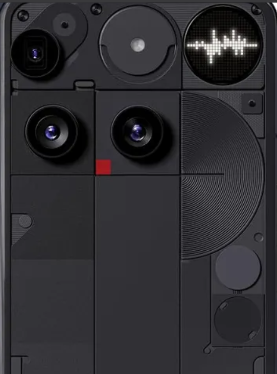

Plate 01 / Nothing / phone back
Modules on a hairline grid
-
Rectangular panels butt together on thin seams. Our
.modulesgrid. - A concentric disc as the one round gesture. The ring circle on the first stage, since retired from the desktop.
- One tiny colour hit, a red square. Ours is green, and it stays a bar, a tick or a dot, never a field.
- A dot-matrix readout in a round window. The Doto accent font and the dotted square marker.